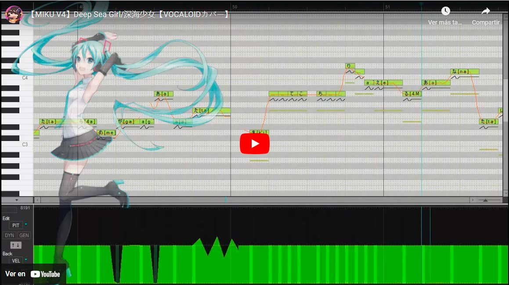

SOBRE LA API
Esta API proporciona información sobre diferentes Vocaloids, incluyendo sus atributos y características. A través de esta API, puedes gestionar los datos de Vocaloids y realizar diversas operaciones como crear, obtener, actualizar y eliminar registros.
RUTAS DISPONIBLES
- GET /vocaloids - Obtener una lista de todos los Vocaloids.
- GET /vocaloids/:id - Obtener información de un Vocaloid específico por su ID.
- POST /vocaloids - Crear un nuevo Vocaloid.
- PUT /vocaloids/:id - Actualizar la información de un Vocaloid existente.
- DELETE /vocaloids/:id - Eliminar un Vocaloid existente.
AUTENTICACIÓN
Las rutas de la API requieren autenticación a través de JSON Web Tokens (JWT) para poder ejecutarlas, garantiza la seguridad de las operaciones. Se debe incluir un token válido en los encabezados de las solicitudes POST, PUT y DELETE.
VALIDACIONES
La API incluye validaciones para asegurar que los datos enviados cumplen con los requisitos establecidos para cada Vocaloid, tales como la existencia de campos obligatorios como el nombre, género y desarrollador, así como un formato de fecha válido.
¿QUÉ ES VOCALOID?
Vocaloid es un software de síntesis de voz creado por Yamaha Corporation que permite generar voces humanas a partir de texto. Desarrollado inicialmente en 2003, ha permitido a músicos y productores componer canciones sin necesidad de cantantes reales. Vocaloid utiliza bancos de voz pregrabados, llamados "voicebanks", para transformar texto en una interpretación vocal realista.
¿CÓMO FUNCIONA VOCALOID?
El software genera voces mediante un proceso de síntesis de voz por concatenación, donde fragmentos de sonidos vocales son ensamblados para generar la pronunciación de palabras completas. Cada voicebank está asociado a un personaje digital, como Hatsune Miku o Megurine Luka, lo que le da identidad al sonido.
Los usuarios pueden controlar la tonalidad, el timbre, la velocidad y la entonación de la voz, lo que permite un alto nivel de personalización para crear composiciones únicas.
